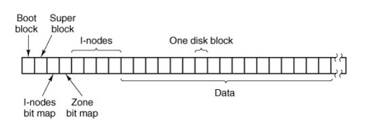

+++ title = "Minix3 文件系统概述" slug = "minix file system" tags = ["os"] date = "2018-06-27T08:43:34+08:00" description = ""
+++
- 文件系统管理文件分配空间和释放空间、记录磁盘块和空闲空间、提供某种方法以防止文件被未授权使用等等
- MINIX文件系统是在用户空间中运行的一个大型C程序
- 文件系统可以独立于MINIX的其他部分进行修改、调试和测试
- 可以很方便地把整个文件系统移植到任何带有C编译器的计算机上
消息
文件系统的结构基本上与内存管理器和所有的I/O任务一样。
- 文件系统的主循环程序不断地等待消息
- 当收到消息后，它首先提取消息的类型，然后以其为索引查找文件系统中处理各类消息的过程指针表。
- 随后调用相应过程，进行处理后，返回状态值。
- 文件系统再把回答消息发送给调用进程，然后回到循环的开始，等待下一条消息的到来。
文件系统的布局

- 引导块
- 每个文件系统都以引导块开始，引导块中包含有可执行代码
- 硬件将从引导设备把引导块读入内存，并转而执行其他代码，引导块负责操作系统本身的加载工作。
- 超级块
- 超级块中包含的信息描述了文件系统的布局
- 位图
- MINIX用两个位图来记录空闲i节点和空闲区段
- 在超级块中保存了i节点位图和区段位图中的第一个空闲块
- 使用区段的目的是确保同一文件的磁盘块处于同一个柱面上，从而提高文件顺序读写的性能（减少寻道时间）
- i-node
- 在打开文件时，先要找到它的i节点，并装入到内存中的inode表中，它将会一直在内存中，直至文件被关闭
- 每个i节点还有一个计数器，当文件多次打开时，在内存中只保存一个i节点拷贝。若i节点自上次调入内存之后被修改过，则要将它写回磁盘。
块高速缓存
- 所有未使用的缓冲区使用一个双向链表链接，按照最近一个使用时间排序
- 使用哈希表进行快速索引
- 每次文件系统需要一个块时，先调用
get_block在缓冲区里寻找- 若未找到这个块，并且缓冲区已满，将LRU链表的第一个块写回供使用
- 若找到这个块，则将缓冲区计数器加一
- 当函数完成后，调用
put_block释放块- 若计数器不为0，则只减去1
- 若计数器为0，则放到LRU链表，一般来说放到链表尾部（最近被访问）
目录和路径
- 文件系统的挂装
mount /dev/hd2c /usr/usr目录的i节点在内存副本设置标志位- 将被挂装的文件系统的超级块调入内存超级块表中
- 一个指向自身根目录i节点的指针
- 一个指向其挂装的目标i节点的指针
- 一颗目录树下可能有多个文件系统
- 注意，即使挂装后可以直接访问，但依然不能硬链接，因为其不能跨文件系统
文件描述符
- 文件打开时，文件描述符被返回给用户进程。其后，READ、WRITE调用都使用文件描述符对文件进行操作。
- 由于
fork之后的子父进程共享同样的文件描述符和文件位置，因此不能将文件位置存入进程表中。 - Minix中引入一个新的共享表flip来实现。
READ系统调用
- n = read(fd, buffer, nbytes);
- 库函数构造消息->文件系统
- 文件系统解析消息类型->调用相应处理函数
- 处理函数提取文件描述符->filp表项及i节点->定位数据块
- 在高速缓存中检查数据块，若不在，从磁盘中调入
- 系统任务将数据从高速缓存中用户进程空间
- 库函数返回，接着执行该语句之后语句
参考资料
- Operating System:Design and Implementation,Third Edition